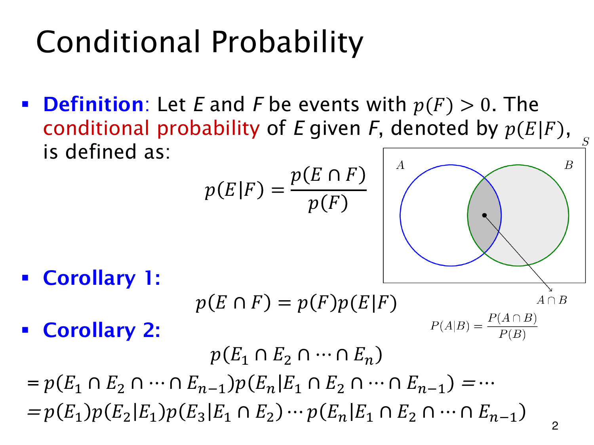

L1.10 · 第 2 页讲解原文
查看这一页课件

条件概率与逐步乘法
已知 F 发生，就把计算范围限制在 F 内。所求事件 E 只剩与它重叠的部分 E∩F；当 p(F)>0 时，重新归一化得到
p(E∣F)=p(F)p(E∩F).
图中的 A,B 也表达这个比例：给定 B 后，计算重叠部分占 B 的概率。面积只是示意。公平骰子取 E={6}、F={2,4,6}，便有 p(E∣F)=(1/6)/(1/2)=1/3。条件事件概率为 0 时，这个比值定义不能用。
移项即可得到乘法公式
p(E∩F)=p(F)p(E∣F).
这里不需要独立性。只有确认独立，才能把 p(E∣F) 换成 p(E)。
继续对前面的交集展开，就得到链式法则（chain rule）：
p(E1∩⋯∩En)=p(E1)k=2∏np(Ek∣E1∩⋯∩Ek−1).
每项都以此前所有事件发生为条件，相应条件事件须有正概率。例如不放回连续抽两张 Ace，概率为 (4/52)(3/51)，第二步已少了一张 Ace 和一张总牌。交集本身不随书写顺序改变，但换展开顺序，各项条件概率会随之改变。